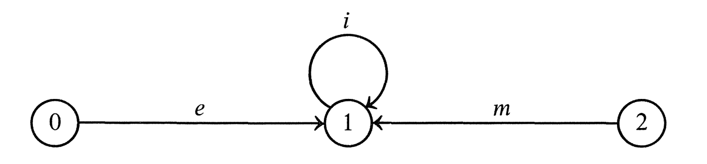
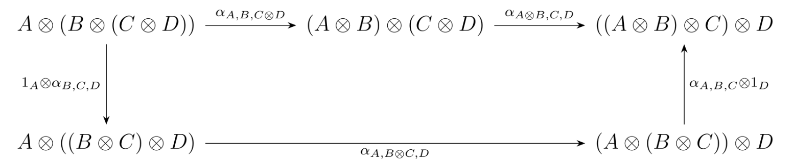
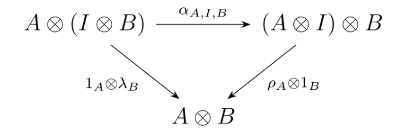
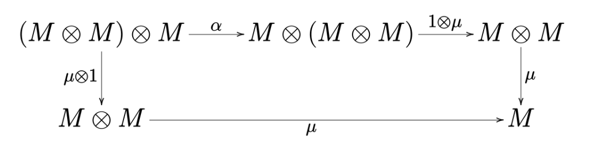
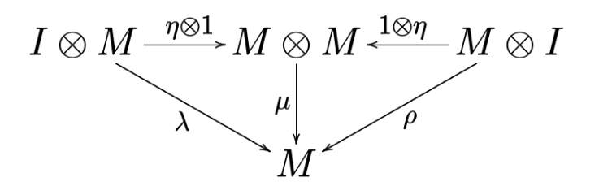
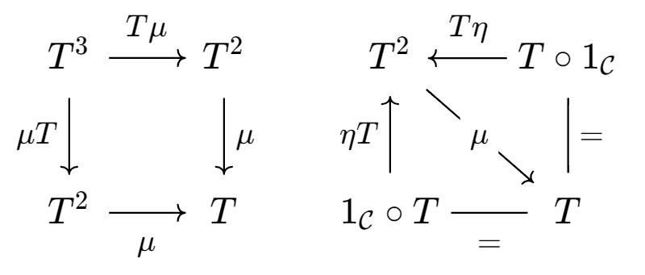

我明明在努力工作，却隔三岔五都会遇到歧视这份职业的人。他们的眼神里，有着对反驳的胆怯与警戒，有时候，还藏着一种 “你敢反驳我便应战” 的好战光芒。
原本以为熟练在 Haskell 中用 Monad 和 Monad transformer 了，结果发现阅读文献碰到时还是绕不开数学。
# Monad 的前世今生
学习 Monad 的时候，如果我们想从数学角度理解，很容易就发现了这样的学习路程：
Haskell IO Monad->category theory->Kleisli category->Kleisli triple->algebraic theory
所以我们直接从 algebraic theory 开始，从最抽象的一步步具化到 Monad。
我们基于集合论先进行讨论，然后再用范畴论的语言重述。
# 集合论语言
首先，我们定义一个极其抽象的，称之为 “operator domain” 的东西（用Ω 表示）。它是一个集合序列Ω≜(Ω1,Ω2,Ω3,...)。
它可以说是毫无信息量了，只表达一个信息：对于ω∈Ωn，我们将ω 看作一个由n 指向 1 的箭头。
Example：
譬如Ω=({e},{i},{m},∅,∅,...)，可以用下图表示：

然后我们引入Ω-algebra 的概念。一个Ω-algebra 是一个 pair (X,δ)，其中X 是一个集合，而δ 是一系列函数，对于ω∈Ωn，有函数δω:Xn→X。
Example：
延续上面的Ω 定义，我们可以考虑这样一个Ω-algebra:
X={0,1}δe:⊥↦1δi:0↦0,1↦1δm:(0,0)↦0,(0,1)↦1,(1,0)↦1,(1,1)↦0
可以看出来，(X,δ) 其实把Ω 中的e "翻译" 成了单位元，i 翻译成了逆元，m 翻译成了模 2 加法。
对一个集合A，实际上我们可以定义AΩ 是一个集合，里面的元素被称为 "terms"，是由A+Ω 中的 symbol 组成的 “合法字符串”。
这个说法很抽象，不妨看一个例子
Example:
延续上面Ω 定义，我们可以考虑A={x,y,z} 时，那么下面的字符串都是AΩ terms:
x,xym,e,xi,xymzm,xyim∈AΩ
实际上，“合法” 体现在可以被当作后缀表达式 parse 掉。譬如xym 因为m∈Ω2，可以把它看作一个二元运算符，前面就需要加两个合法的AΩ 中的 terms。而xi 因为i∈Ω1 所以前面只需要加一个 term 就好。
可以注意到，严格来说我们是A+Ω，但实际中我们几乎默认A 和Ω 没有公共元素（A 看作 elements，Ω 看作 operations）所以往往直接写x,y,m 而不是(x,0),(y,0),(m,1)。
我们继续可以引入Ω-equations 的概念。它也是一个集合，而集合中的元素全部是二元集合。
我们给定一个毫无意义，但是方便 enumerate 的集合V={v1,v2,v3,...} 表示抽象的 variable，那么看一个例子：
Example:
延续上面Ω 的定义，我们可以定义Ω-equations:
E={{v1v2mv3m,v1v2v3mm},{v1v1im,e},{v1iv1m,e}}
虽然看起来很奇怪，但是仔细理解，可以发现它表达了(v1+v2)+v3=v1+(v2+v3)，还有v1+(−v1)=0 这种含义。
然而这个E 之所以使用的是二元集合而不是等号，是因为VΩ 中的 terms 是无法判等的！只能等它被某个Ω-algebra 解释后，才可以去判等。
定义好Ω 和E 后（对于某个V），那么(Ω,E) 就被称为一个 equational presentation。
因为实际上，它只定义了一些 operations 的 domain，还有一些 equational relation。剩下我们一无所知。这个 operation 是什么？加法？这个 equational 是什么？同构？相等？v1,v2 是什么？整数？我们都不知道！这就是抽象。
然而有了Ω-algebra，这就都不一样了！我们知道了元素是X 中的，我们知道了应该怎样运算（利用δ）。
Example:
给定Ω-algebra (X,δ) 后，很显然我们得到了一被称为 total description map 的东西：δ∗:XΩ→X，递归定义为：
xδ∗=xp1p2...pnωδ∗=p1δ∗p2δ∗...pnδ∗δω
仔细看看就知道它这是在利用δ 在进行计算！计算结果就还是X 中的元素。
那么，给定一个r:V→X 把抽象的 variable 映射到具体的X 中的元素，很显然我们可以诱导出r†:VΩ→XΩ→X。即我们先把VΩ 中 terms 里的 abstract variable 换成X 中的元素，再利用δ∗ 进行计算。
此时我们可以引出(Ω,E)-algebra 的定义了！（注意，之前的 algebra 是没有E 的）
(Ω,E)-algebra 是一个Ω-algebra (X,δ)，并且X 中的元素是可以判等的。
对于任意的 assignment r:V→X，都有E 中的 equation 条件被满足（相等）。
注意，这里说了对于任意 assignment，实际上也就是x+(−x)=0 for all x 的意思。而这里的 for all 体现在把 abstract variable 映射到具体元素函数r 的任意上。
能用Ω,E,δ,X 这样定义出的(Ω,E)-algebra 被称为 equationally definable class of algebra。
于是对于任意 set A，如果我们有 function f:A→X，那就可以自然地 extend 出一个f†:AΩ→X 的出来。
之前说了，VΩ 中的 terms 是无法判等的，那么现在给定一个 equational presentation (Ω,E)，和一个任意的集合A，我们定义一个AΩ 上的等价关系：
EA={(p,q)∈AΩ×AΩ∣for all (Ω,E) algebra (X,δ) and functions f:A→X,f#p=f#q}
Example:
沿用之前的定义：
Ω=({e},{i},{m},∅,...)E={{xymzm,xyzmm},{xxim,e},{xixm,e},{exm,x},{xem,x}}
那么很显然，对于A={x,y,z} 有：
p=xxximm∈AΩq=x∈AΩ
而p=q。这是一件很自然的事，因为要满足E，就自然会导致p,q 在所有(Ω,E)-algebra 下是相等的。
EA 的定义，就是把原先AΩ 这个不可比的集合，利用E 而引入了等价关系变得可比！
我们记AT=AΩ/EA（T is for ‘‘theory’’），并且自然地引入一个映射Aρ:AΩ→AT，也就是把p∈AΩ↦[p]∈AT。
Example:
沿用上述的定义，实际上我们有：
[xxximm]=[xem]=[x]
它们都是一个等价类里的（可以看作是化简）
实际上，AT 就是一个(Ω,E)-algebra！这是怎么定义的呢？
X≜AT=AΩ/EA[p1][p2]...[pn]δω≜[p1p2...pnω]δω:ATn→AT
那么给定一个 equational presentation (Ω,E)，我们可以定义：
The clone of (Ω,E) is a category named Set(Ω,E)：
- 它的 objects 是 sets A,B,C,...。
- 它的 morphism A⇁B 是 function A→BT。
- 它的 identity morphism 是Aη:A→AT。
- 它的 composition 定义为(AαB)∘(BβC)=AαBTβ†CT。
Example:
考虑Ω=({e},{i},{+},∅,∅,...)，以及E=∅。那么此时显然EA=∅ 对于任意A，所以也有AT=AΩ/EA=AΩ。
假如我们有四个集合：
A={1}B={b,x}C={c,y}D={d,z}
然后有三个函数：
α:A→BT=BΩβ:B→CT=CΩγ:C→DT=DΩ
函数内容为：
α=β=γ=1↦xie+b+x↦yb↦cc+c↦dz+iy↦e
那么有：
α∘(β∘γ):A→DT(α∘β)∘γ:A→DT
且：
(β∘γ)=α∘(β∘γ)=(α∘β)=(α∘β)∘γ=b↦dz+idz+i+x↦e1↦eie+dz+idz+i++1↦yie+cc++1↦eie+dz+idz+i++
所以有α∘(β∘γ)=(α∘β)∘γ。
上个例子其实说明了，morphism 就是 substitution 的过程，也其实揭示了证明的内涵：证明某个命题，本质上就是一直在 substitute axiom 中的 variable。
到这里或许读者已经初见端倪，为什么我们应该把 Monad 理解成一种 computation。
因为从只含有 variable 的集合A，后面引入了Ω 中定义的 operations 得到AΩ，然后进一步引入了E 中的相等关系得到了AT。
AΩ 中的 terms 可以看作是表达式了，而AT 中的元素则可以看作有了E 给的化简规则后，化简的结果。
而 terms in AΩ 就可以看作是证明（Curry-Howard 同构），morphism A→BT 就告诉我们，得到了一个AT 中的 terms，如何通过 substitution 得到一个BT 中的 term。
这时候，我们会发现没有 types 怎么办。所以我们需要引入 2-category！！
object 是 types，morphism 是 terms，然后 morphism 之间的 morphism 是 substitution。
以下为原始 note：
# 单位半群（Monoid）
” 这个相对简单，就是一个代数结构。当集合S 上存在一个二元运算∗:S×S→S 和一个单位元e∈S 满足：
-
∀a∈S,e∗a=a∗e=a.
-
∀a,b,c∈S,a∗(b∗c)=(a∗b)∗c.
那我们就称集合S 和这个运算、单位元形成了一个单位半群（幺半群，Monoid）
例：自态射形成了一个 Monoid。考虑一个 category C 中只有一个元素a 和很多 morphism，那么这些 morphism 都是从a 到a 的箭头，他们形成了一个 Monoid。其中S 就是这些 morphism，二元运算是 morphism 的组合，单位元是 identity morphism。由于 category 的性质，故满足结合律和单位律，故形成了一个 Monoid。
# Monoidal Category
A monoidal category is a category C quipped with a monoidal structure:
-
a bifunctor ⊗:C×C→C.
-
an object I called the monoid unit.
-
three natural isomorphisms:
-
for any three arguments A,B,C, there is a isomorphism α:
αA,B,C:A⊗(B⊗C)≅(A⊗B)⊗C
-
for any argument A, there are two isomorphisms:
λA:I⊗A≅AρA:A⊗I≅A
-
the three natural isomorphisms should satisfy the coherence conditions:
-
for all A,B,C,D∈C, the following diagram commutes:

-
for all A,B∈C, the following diagram commutes:

关于这个定义，可以说明几点。
-
这个 monoidal structure 里的元素（譬如单位元），都是 category C 里面的 object。也就是说我们希望这个 category 本身就有一点 monoid 的结构。但是它不是一个 monoid 在于，结合律和单位律都是同构而不是相等。譬如在 category Set 中，就是集合的同构而不是集合的相等。{(a,(b,c))} 和{((a,b),c)} 就是同构但不相等的。
-
其次下面的 coherence conditions 其实是，我们可以利用α 找出很多个诸如下面这种同构：
(((A1⊗A2)⊗A3)⊗...⊗An)≅(A1⊗(A1⊗(A3⊗...⊗An)))
因为你可以选择拆括号时不同的顺序，从而选择α 的不同的 arguments。coherence condition 就说明，这些同构都应该是同一个。
例：把 category Set 补充成一个 monoidal category。bifunctor 选择笛卡尔积，即A⊗B={(a,b)∣a∈A,b∈B}。然后 unit object 选择为一个特殊的单元素集{∗}。可以验证譬如{((1,2),3),((4,5),6)}≅{(1,(2,3)),(4,(5,6))}，以及{(1,∗),(2,∗)}≅{1,2} 这样有自然的 isomorphism 满足要求和 coherence condition。
# Monoid in monoidal category
下面我们定义，在一个 monoidal category 上自然导出一个 monoid：
A monoid (M,μ,η) in a monoidal category (C,⊗,I) is an object M together with two morphism μ,η:
- μ:M⊗M→M called multiplication.
- η:I→M called unit.
such that the diagram commutes:

例：考虑Set 是一个 monoidal category，那么我们选择其中一个 object，譬如M={0,1}。那么M⊗M={(0,0),(0,1),(1,0),(1,1)}。我们可以找到一个 morphism μ，即模 2 乘法：
μ(0,0)=0μ(0,1)=0μ(1,0)=0μ(1,1)=1
对于η，我们需要找到一个{∗}→{0,1} 的映射，很显然有两个选择。如果我们选择η∗=0 会怎样？那么第二个 diagram 将不 commute！因为I⊗M⟶η⊗1M⊗M⟶μM 就会有映射：(∗,1)↦(0,1)↦0，显然这和直接用消去映射λ(∗,1)=1 得到的结果不一样。
所以我们需要选择η∗=1，这样就满足了要求。这个例子也阐释了，我们是怎么利用已有的 monoidal category 中那些 monoid structure（即α,λ,ρ）构造一个 monoid 的。
# Monad
最终我们定义一个特殊情况：Monad is a monoid in the (monoidal) category of endofunctors.
考虑一个 category C，显然可以找到一个 category D：
- D 中的 object 是C→C 的 functor。
- D 中的 morphism 是 functor 之间的 natural transformation。
那么D 是一个 monoidal category：
- 对于两个 functor F,G∈D，F⊗G=F∘G∈D。
- I=1C 即C 上的 identity functor。
不难验证，这满足 monoidal category 的要求。实际上，D 是一个 strict monoidal category，因为根据 category 和 functor 的要求，实际上就有F∘(G∘H)=(F∘G)∘H，即不是同构而是直接相等。
那么我们就可以找出D 中的一个元素和两个 morphism，然后导出一个 monoid，即是 monad：
A Monad on C consists of an endofunctor T:C→C together with two natural transformations η:1C→T and μ:T∘T→T.
They are required to make the following diagram commutative:

显然T 是D 中的一个元素，而μ,η 也对应了导出 monoid 在 endofunctor category 下的情况。而特别的地方在于，由于 endofunctor category 是 strict monoidal category，那么α,λ,ρ 都是单位映射，即相等（因为在 category 里，要求了1C∘T=T∘1C=T）。所以图中省略了α 部分，把T∘(T∘T) 和(T∘T)∘T 直接合并了，而且在右图中将λ,ρ 改写为=。
例：我们仍考虑 category Set，那么 powerset 实际上就是一个 Monad。考虑一个 endofunctor T(A∈Set)=2A∈Set，那么我们可以定义ηA:1Set(A)→T(A) 为ηA(a∈A)={a}，譬如对于A={1,2,3}，那么A↦ηA{{1},{2},{3}}。
然后定义μA:T(T(A))→T(A) 其实就是把集合 flatten 一层。譬如对于A={{{1,2},{3,4}},{{5}}}，那么A↦ηA{{1,2,3,4},{5}}。这就形成了一个 Monad。
注意，实际上 functor T 应该不仅描述了 object 间的映射关系，还需要说明 morphism 间的映射关系。而Set 上的 morphism 是集合之间的函数，那么对于 powerset 这个T，一个很自然的映射就是把函数（譬如f(x)=x+1）apply 在 powerset 里的每个 set。